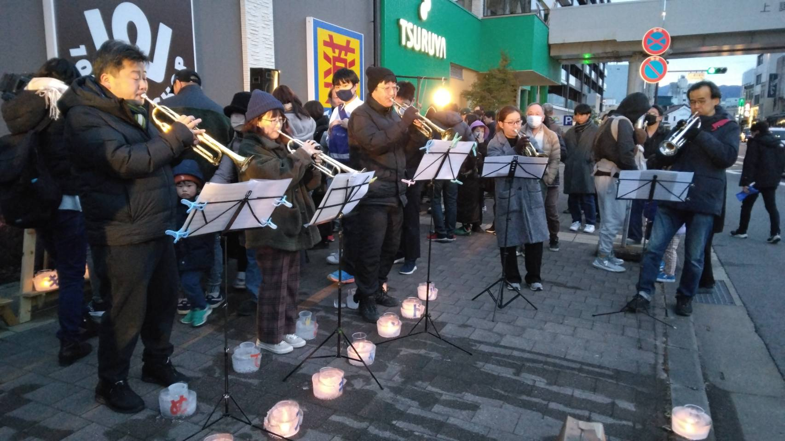
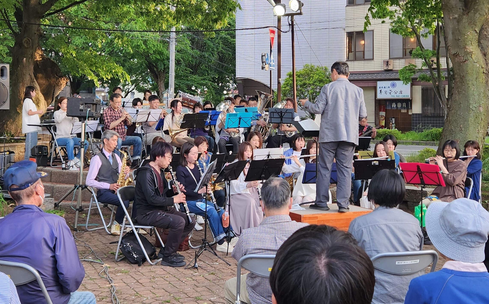
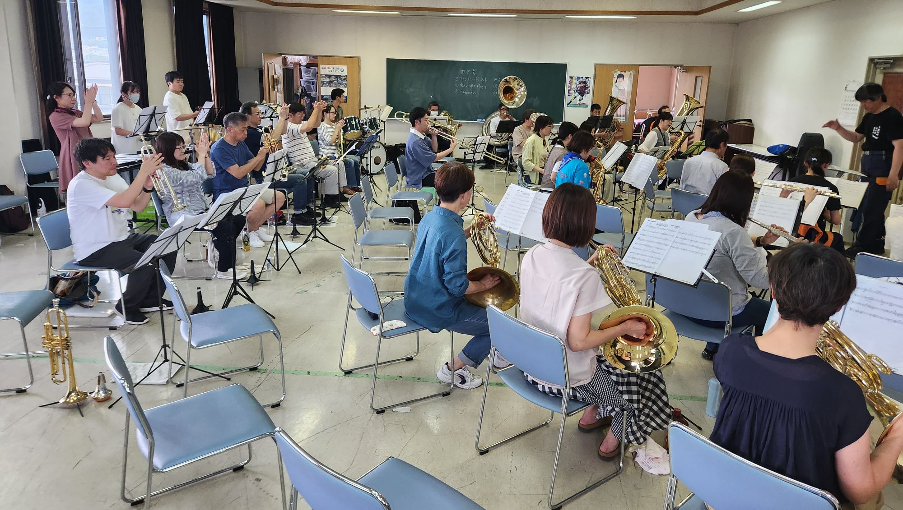
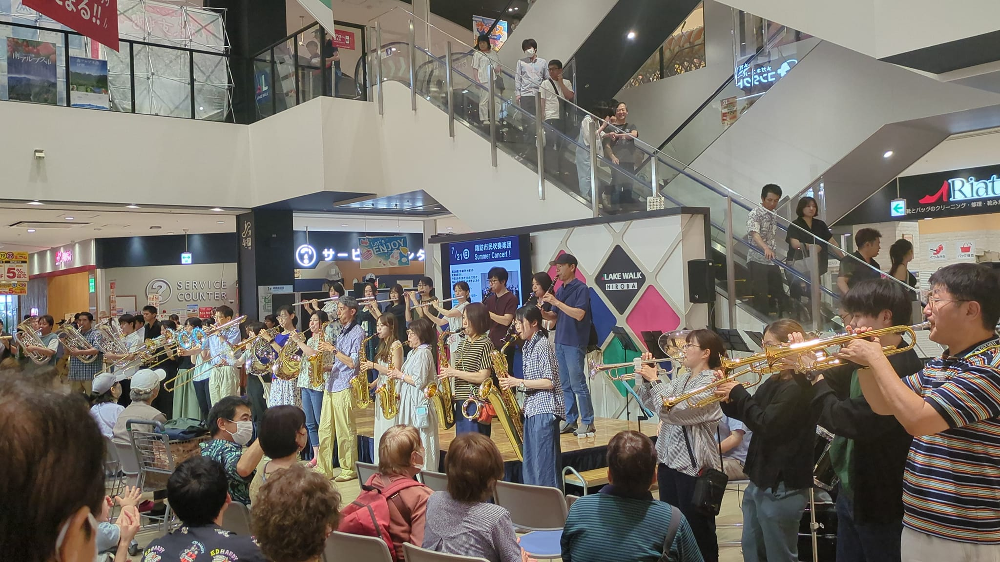
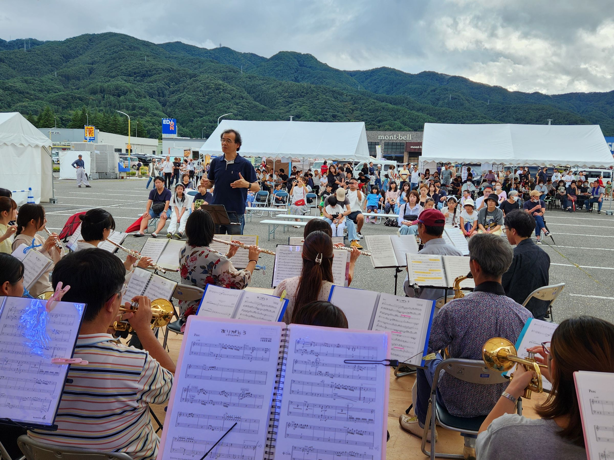
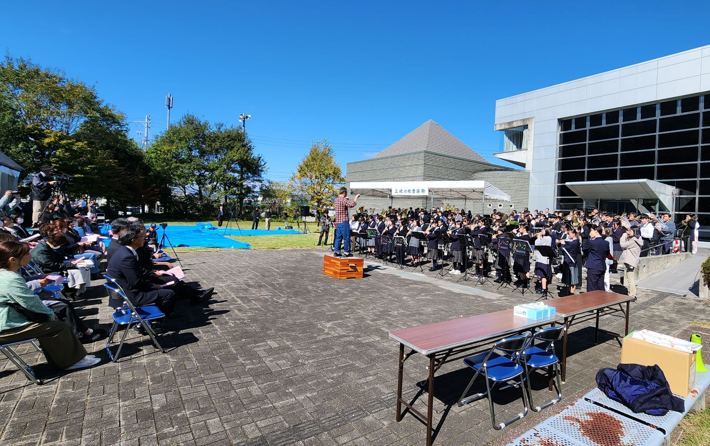

コンサート報告（2024年）
2025年 ｜
2024年 ｜
2023年 ｜
2022年
2021年 ｜
2020年 ｜
2019年 ｜
2018年 ｜
2017年
2016年 ｜
2015年 ｜
2014年 ｜
2013年 ｜
2012年
2011年 ｜
2010年 ｜
2009年 ｜
2008年 ｜
2007年
2006年 ｜
2005年 ｜
2004年 ｜
2003年 ｜
2002年
アイスキャンドル点灯式出演 演奏終了（2024.2.3）
諏訪の冬の寒さを生かし、街角に氷で作ったキャンドルがゆらめくアイスキャンドルイベント。諏訪圏内各地で開催されましたが、その上諏訪会場の点灯式に出演しました。点灯式の出演はこれもコロナの影響で４年ぶり。点灯前後に演奏をし、会場を盛り上げることができました。寒い中お聞きいただき、ありがとうございました。
並木DEコンサート 演奏終了（2024.5.18）
本年も今年度初回の並木DEコンサートに出演させていただきました。上諏訪駅にほど近い並木通りでの街角コンサート。天候にも恵まれ、さわやかな空気の中、私たちも１時間、楽しく演奏することができました。立ち見を含む多くの皆様においでいただき、誠にありがとうございました。
スワコエイトピークス ミドルトライアスロン大会 応援演奏 雨天中止（2024.6.23）
 一昨年に続き、２回目となった諏訪圏全域を会場とするトライアスロン大会。当日は朝から雨となり、大会は一部変更の上開催されましたが、私たちの演奏は悪天候のため中止となりました。
前回に続き、下諏訪町消防団音楽隊を中心に、諏訪地区吹奏楽団体からの有志による合同バンドを結成、練習も重ねていたのですが、やむを得ない判断とはいえ残念でした（写真は合同練習の様子）。
大会は今後も開催されるとのことですので、また演奏の機会が来ることを楽しみにしております。
サマーコンサート＠レイクウォーク 演奏終了（2024.7.21）
 岡谷市のショッピングモールのイベントスペースをお借りして、13時と15時の2回、演奏させていただきました。冒頭はフラッシュモブ的に会場内に隠れていた団員たちが徐々に集まりながら演奏に参加。10年前、レイクウォークの前身・旧アピタ岡谷店で開催したフラッシュモブを再現しました。その後、スタジオジブリの名曲やアニメメドレーを披露。立ち見も出る盛況ぶりで、お買い物中の皆さんに会場を盛り上げていただきました。
大きな音が出るにもかかわらず、快く場所をお貸しいただいたレイクウォーク岡谷の皆様に厚く御礼申し上げます。ありがとうございました。
すてぱフェス2024出演 演奏終了（2024.9.22）
 諏訪IC横のショッピングセンターで開催された「すてぱフェス」に出演しました。広大な駐車場を活用してクラフトマーケット、フリーマーケットやキッチンカーも出る中、特設ステージが設けられ、2日間にわたって諏訪圏の様々な団体が演奏やパフォーマンスを披露しました。
私たちは2日目の午後の出演で、平成時代を彩った数々の名曲を中心にお届けしました。心配された天候も何とかもち、多くのお客様に聞いていただいたこと、大変うれしく思います。また、主催者、運営に携わった皆様には大変お世話になりました。ありがとうございました。
第30回上社の杜音楽祭 演奏終了（2024.10.20）
 諏訪大社上社本宮前で開催される音楽祭も30年目の節目を迎えました。秋も深まり、やや肌寒い天候ではありましたが晴天に恵まれ、諏訪地区４中学校吹奏楽部と当団が演奏を披露。各中学校も部員の数が増え、充実した演奏を聞かせてくれました。そして、最後は恒例の合同演奏を実施。130人編成の迫力あるサウンドをお届けすることができました。
多くのお客様にご来場いただき、誠にありがとうございました。
第30回定期演奏会 演奏終了（2024.12.15）
団最大の行事、定期演奏会。30回の節目を記念して高橋宏樹先生に作曲いただいた新曲「March on Bustle」の初演を行いました。当日は高橋先生にもご来場いただき、温かいコメントをいただきました。また、客席も利用してのフラッシュモブ風演出を加えた演奏を10年ぶりに実施。大いに企画を盛り込んだステージとしました。
おかげさまで過去最高の730人のお客様にご来場いただき、団員一同、感激しているところです。プログラムの部数がなくなってしまうなど、行き届かぬところもあったかと存じます。お詫び申し上げますとともに、年末の忙しい中、ご来場いただいたことに心より厚く御礼申し上げます。
次の10年に向けて、これからも楽しい音楽を諏訪圏の皆さんにお届けしたいと思っております。今後とも諏訪市吹を、どうぞよろしくお願いいたします。